2015-09-22 - Nº 21
Editorial
Aqui está a Newsletter Nº 21 no seu formato habitual.
Esta Newsletter encontra-se mais uma vez disponível no sistema documenta do altLab. Todas as Newsletters encontram-se indexadas no link.
Esta Newsletter tem os seguintes tópicos:
E no passado fim-de-semana realizou-se a Maker Faire Lisboa. Foram imensos os projetos e mais as pessoas que visitaram a feira. A Atmel é noticias duas vezes esta semana, uma por ter lançado um micro-processador ARM da família Cortex A5 que é o que gasta menos dentro desta arquitetura, e outra por ter sido adquirida pela britânica Dialog Semiconductor num negócio de 4.6 Mil Milhões de Dólares. Por último, o grupo Volkswagen foi notícia pelas piores razões - fazer batota no controlo das emissões de gases dos carros a gasóleo de quatro cilindros com software escrito especificamente para que tivessem menos emissões durante os testes. Nesta Newsletter iremos apresentar um projeto de maker que é um simulador de TV acesa. Iremos construir um circuito para gerar resultados aleatórios.
 João Alves ([email protected])
João Alves ([email protected])
O conteúdo da Newsletter encontra-se sob a licença  Creative Commons Attribution-NonCommercial-ShareAlike 4.0 International License.
Creative Commons Attribution-NonCommercial-ShareAlike 4.0 International License.
Novidades da Semana ^
-
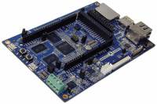
"Atmel Corporation, a global leader in microcontroller (MCU) and touch solutions, today launched a new series of Atmel | SMART ARM® Cortex®-A5-based microprocessors (MPUs), delivering the world’s lowest power consumption for all MPUs in its class. The new MPUs deliver sub 200µA in retention mode with context preserved, 30µs ultra-fast wake-up and a new backup mode with DDR in self-refresh at only 50µA. The Atmel | SMART SAMA5D2 series provides great system integration with the addition of a complete audio subsystem, lower pin-count and ultra-small package for space constraints applications, and built-in PCI-level security targeting industrial Internet of Things (IoT), wearables and point of sale (POS) applications. Expanding the Atmel SAMA5 family, the SAMA5D2 series delivers just the right price-to-performance ratio for applications requiring an entry-level MPU and extended industrial temperature range (-40 to 105°C ambient temperature). The new series is also a great migration path for designers using ARM926-based MPUs looking for higher performance and additional features including low power, higher security, DDR3 support, smaller footprint, audio, USB HSIC and Atmel’s patented SleepWalking™ technology."
Outras fontes: linuxgizmos, Yarian, Embedded Control Europe, iTers News.
Dialog Semiconductor to acquire Atmel for $4.6 Billion
"DialogSemiconductor and Atmel Corporation announced today that Dialog has agreed to acquire Atmel in a cash and stock transaction for total consideration of approximately $4.6 billion. The acquisition creates a global leader in both Power Management and Embedded Processing solutions. The transaction results in a fast growing and innovative powerhouse, supporting Mobile Power, IoT and Automotive customers. The combined company will address an attractive, fast growing market opportunity of approximately $20 billion by 2019."
Outras fontes: The Wall Street Journal, Bloomberg, Reuters, International Business Times, Street Insider.
Carmaker allegedly used software that circumvents emissions testing for certain air pollutants
"Today, EPA is issuing a notice of violation (NOV) of the Clean Air Act (CAA) to Volkswagen AG, Audi AG, and Volkswagen Group of America, Inc. (collectively referred to as Volkswagen). The NOV alleges that four-cylinder Volkswagen and Audi diesel cars from model years 2009-2015 include software that circumvents EPA emissions standards for certain air pollutants. California is separately issuing an In-Use Compliance letter to Volkswagen, and EPA and the California Air Resources Board (CARB) have both initiated investigations based on Volkswagen’s alleged actions. “Using a defeat device in cars to evade clean air standards is illegal and a threat to public health,” said Cynthia Giles, Assistant Administrator for the Office of Enforcement and Compliance Assurance. “Working closely with the California Air Resources Board, EPA is committed to making sure that all automakers play by the same rules. EPA will continue to investigate these very serious matters.”"
Outras Fontes: The Telegraph, Volkswagen, Bloomberg, autonews, USA Today, c|net, Business Insider, BBC.
Ciência e Tecnologia ^
-
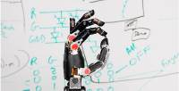
"When DARPA launched the Revolutionizing Prosthetics program in 2006, the state of upper-limb prosthetic technology was far behind lower-limb technology. Advancing upper-limb technology was judged to be a more difficult medical and engineering challenge. After six years of development, the Revolutionizing Prosthetics program developed two anthropomorphic advanced modular prototype prosthetic arm systems, including sockets, which offer increased range of motion, dexterity and control options. Thirty-five volunteer amputees participated in a Department of Veterans Affairs (VA) funded optimization study in VA and DoD medical centers and provided design feedback for the development of the Gen-3 Arm System by DEKA Integrated Solutions Corporation, one of two primary performers on the Revolutionizing Prosthetics program. Based on that testing and subsequent refinement, DEKA submitted a 510(k) premarket notification to the FDA in April 2012 seeking approval to make the Arm System commercially available."
3D Printing Ancient Artifacts Lets Us Figure Out What They Were Actually For
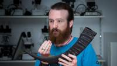
"You are aware, of course, of that legendary ancient Irish artifact, the Conical Spearbutt of Navan, yes? No? You're not? Well, it doesn't matter, because thanks to to the work of PhD student Billy Ó Foghlú, it's no longer a conical spearbutt at all. Ó Foghlú was recently wondering why there were no ancient bronze horn mouthpieces in Ireland, even though horns have been found there, and mouthpieces have been found all over Europe. Then he took another look at the spearbutt and realized that it was a mouthpiece masquerading as a spearbutt this whole time."
Printing transparent glass in 3-D
"The technology behind 3-D printing — which initially grew out of work at MIT — has exploded in recent years to encompass a wide variety of materials, including plastics and metals. Simultaneously, the cost of 3-D printers has fallen sufficiently to make them household consumer items. Now a team of MIT researchers has opened up a new frontier in 3-D printing: the ability to print optically transparent glass objects. The new system, described in the Journal of 3D Printing and Additive Manufacturing, was developed by Neri Oxman, an associate professor at the MIT Media Lab; Peter Houk, director of the MIT Glass Lab; MIT researchers John Klein and Michael Stern; and six others."
Modelos 3D ^
Com a disponibilidade de ferramentas que permitem dar azo a nossa imaginação na criação de peças 3D e espaços como o thingiverse para as publicar, esta rubrica apresenta alguns modelos selecionados que poderão ser úteis.
0-4"/100mm Dial Caliper (http://www.thingiverse.com/thing:831597)
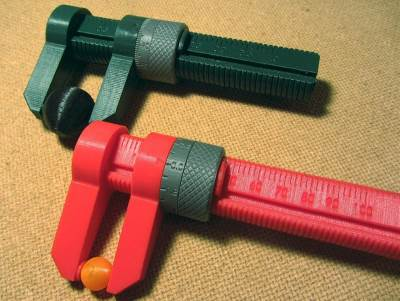
The inch version of these calipers has a direct-read scale with 0.1" markings and a secondary micrometer-style scale that reads down to 0.001"! (Yeah, right...) Realistically, it's maybe accurate to +/-0.010".
The metric version has a direct-read scale with 2mm markings and a secondary scale with 0.1mm graduations.
Parametric Fixing angle (http://www.thingiverse.com/thing:581036)
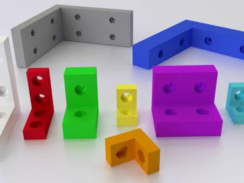
It's my Parametric Fixing angle.
if you like !!! Please !!! make it one and post it
You can chose width, height, thickness, the number of screw vertical, the number of screw horizontal, screw mounted or recessed. Creates a hex or cylindrical head screws.
The possibilities are very numerous.
You will therefore be able now with the customizer of realize your Fixing angle.
Now, you have more excuses to tinker (;
If you are having any difficulties, need advices or you want me to make changes, I remain at your disposal.
If you want to learn OpenSCAD you can follow these video tutorials : http://www.thingiverse.com/thing:656880
"Pencil" Puzzler (http://www.thingiverse.com/thing:1014396)
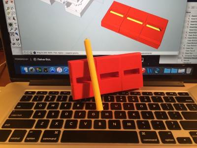
Many thanks Thingiverse for featuring this thing! Also, thanks for the "Alliance Of Magicians" heads up! :)
An old pencil magic trick, designed to appear to chop a solid pencil into 3 pieces, then magically restore the pieces back together.
Video is here: https://www.youtube.com/watch?v=zgqfPC3dVBA.
I built my first version of this thing out of bass wood and "laddie" pencils in my high school days. Plastic versions of the illusion are available in magic stores and on the web, but I decided to design and print my own.
All pieces are printed, even the "pencil" pieces.
Circuitos ^
Aqui é apresentado um circuito simples que poderá ser construído com componentes.
Gerador de Dados Aleatórios
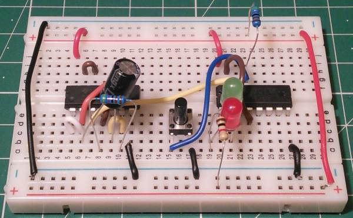
Hoje iremos construir dois circuitos que, com a ajuda de dois integrados e mais alguns componentes, nos permitem gerar resultados aleatórios.
Ambos os circuitos usam um IC CD4011 que implementa 4 Portas NAND com buffer e um IC CD4017 que é um contador de décadas. Quando o botão é premido todos os LEDs ficam acesos. Quando é largado fica um aceso aleatoriamente.
O primeiro circuito apenas apresenta um de dois valores possíveis. O segundo apresenta um resultado em dez valores possíveis.
Esquemático
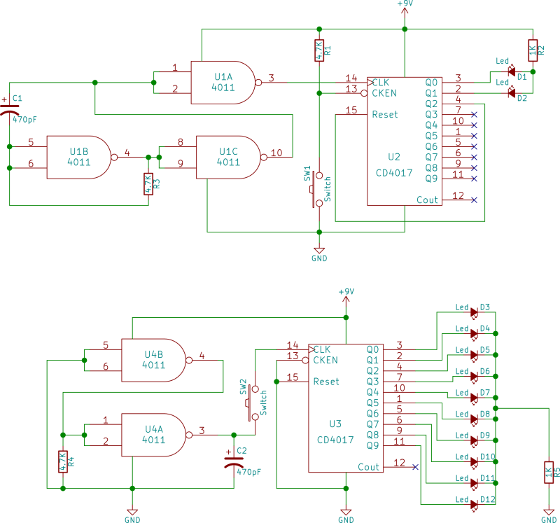
Componentes (BOM):
Circuitos:
- 1x IC CD4011 (U1 e U4)
- 1x IC CD4017 (U2 e U3)
- 1x Condensador Electrónico de 470pF (C1)
- 2x Resistência de 4.7K Ohms (R1 e R3)
- 1x Resistência de 1K Ohms (R2)
- 1x Botão (SW1)
- 1x LED vermelho de 5mm
- 1x LED verde de 5mm
- 1x Bateria de 9V
No caso do segundo circuito serão necessários mais 8 LEDs (A cor não é muito importante)
Pin-out dos IC/Componentes
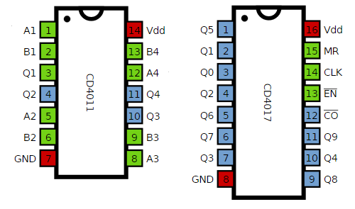
Links úteis:
Artigo do Maker ^
Projeto interessante publicado por um maker.
Fake TV Security Light
O projecto de maker da semana foi feito pelo Marcus Jenkins e encontra-se publicado no seu site.
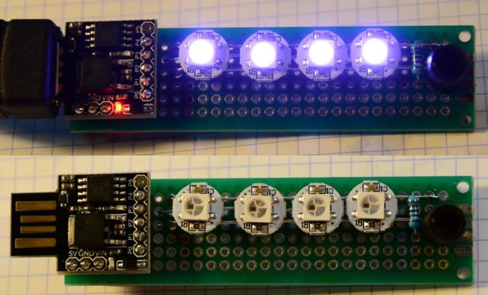
Trata-se de um pequeno circuito que simula através de variação de LEDs alguém a ver televisão. Muito util se sair de casa e quiser dar a entender que ainda lá se encontra alguém.
A Ideia
A ideia de se deixar uma luz acesa em casa enquanto se está fora é dar ao ladrão uma sensação desconfortável de que alguém está em casa. A TV à noite apresenta uma iluminação que se encontra em constante mudança contra a janela que realmente indica que se está em casa e que a pessoa está acordada. Claro que para obter este resultado pode ser deixada a TV ligada, mas isso, além de caro é mau para o ambiente uma vez que uma TV consome pelo menos 50W no melhor e no pior dos casos centenas. Além disso, não estando ninguém a ver TV não vale a pena gastar a mesma.
Por que não usar alguns RGB LED de neopixel e um micro-controlador para simular o mesmo efeito? Com apenas alguns euros, uma hora de tempo de compilação e um orçamento de energia de 5W máximo absoluto, isso parece um projeto vencedor.
Componentes
Os componentes que o maker usou para o projeto foram:
- 1 DigiSpark (do AliExpress)
- 1 Light Dependent Resistor (LDR)
- 3 módulos neopixel WS2812B LED (do Ebay)
- 1 cabo USB (do Ebay)
- 1 protoboard
- 1 resistência de 1k Ohm
- 1 resistência de 470 Ohm
- 1 condensador Electrónico
O Circuito
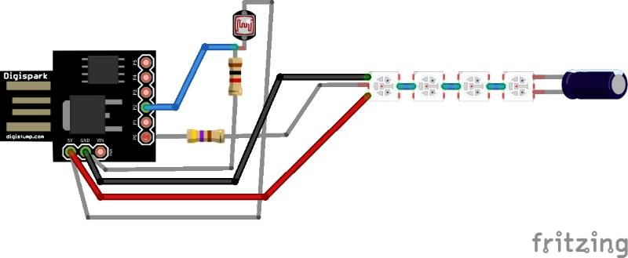
Foi usado um Digispark neste projeto porque o sistema em si não tem um grau de exigência elevado nem de processamento nem de I/O. O DigiSpark tem um conector USB para energia e qualquer carregador USB serve para isso.
O Light-dependent resistor (LDR) permite ao dispositivo poupar energia durante as horas do dia. Foi colocado um pequeno tubo a volta do LDR para que os LEDs não afectem o mesmo. Em qualquer dos casos, foi adicionada alguma inteligência no software para evitar que haja oscilações entre o modo dia e o modo noite.
Construindo o circuito
O Circuito foi construído numa placa de prototipagem que não é uma stripboard mas sim uma protoboard.
A resistência e o condensador para a parte do circuito do neopixel WS2812B LEDs foram colocadas na parte de baixo da placa.
O LDR foi envolvido num tubo de plástico que pode por exemplo ser um pequeno pedaço de uma mangueira de irrigação.
É possível usar qualquer Arduino com o mesmo código-fonte - só é preciso alterar as atribuições de pinos. Poderiam ser usados menos LEDs e aumentar o valor de LED_BRIGHT no código. Ou apenas aumentar LED_BRIGHT. Tenha em mente que esses LEDs consomem cerca de 0,5 W cada um no brilho total (em 'branco' de cor RGB). O LDR é opcional. Obviamente que se este não estiver presente tem que alterar o código retirando essa parte.
O Código
O código fonte está no Github. E também se encontra aqui:
////////////////////////////////////////////////////////////////////
//
// Fake TV Security Light
//
// Built for DigiSpark
//
//
////////////////////////////////////////////////////////////////////
#include <Adafruit_NeoPixel.h>
#define PIN_NEOPIXEL_OUT 0
#define ADC_LDR 1 // Pin marked P2 === digital pin 2
#define NUM_LEDS 4
#define LED_BRIGHT 120
#define DAY_THRESHOLD 245
#define NIGHT_THRESHOLD 240
typedef struct
{
int period;
int r;
int g;
int b;
} FAKE_PICTURE;
FAKE_PICTURE pictures[] =
{
{1000, LED_BRIGHT, LED_BRIGHT, LED_BRIGHT / 2},
{2000, LED_BRIGHT, LED_BRIGHT/2, LED_BRIGHT},
{4000, LED_BRIGHT, LED_BRIGHT, LED_BRIGHT},
{2000, LED_BRIGHT/2, LED_BRIGHT, LED_BRIGHT},
{2000, LED_BRIGHT, LED_BRIGHT, LED_BRIGHT/2}
};
// Global variables :-/
Adafruit_NeoPixel strip =
Adafruit_NeoPixel(NUM_LEDS, PIN_NEOPIXEL_OUT, NEO_GRB + NEO_KHZ800);
void setup()
{
strip.begin();
strip.show(); // Initialize all pixels to 'off'
}
void loop()
{
static boolean isNight = false;
static int pictureIndex = 0;
int ldrValue = analogRead(ADC_LDR);
if(isNight)
{
if(ldrValue >= DAY_THRESHOLD)
{
isNight = false;
}
}
else
{
if(ldrValue <= NIGHT_THRESHOLD)
{
isNight = true;
}
}
delay(pictures[pictureIndex].period);
if(isNight)
{
setLEDs(pictures[pictureIndex].r, pictures[pictureIndex].g,
pictures[pictureIndex].b);
}
else
{
setLEDs(0, 0, 0);
}
pictureIndex ++;
if(pictureIndex >= sizeof(pictures)/sizeof(pictures[0]))
{
pictureIndex = 0;
}
}
void setLEDs(int r, int g, int b)
{
uint32_t colour = strip.Color(r, g, b);
for(int i = 0; i < NUM_LEDS; i++)
{
strip.setPixelColor(i, colour);
}
strip.show();
}
A utilização
Você quer fazer parecer que está a ver TV sem que o ladrão perceba que está a ser enganado. Então, o circuito deve lançar luz indirecta de tal forma que você vê a iluminação do lado de fora da casa, mas não os próprios LEDs. Uma janela no andar superior seria bom, assumindo que não há linha de vista visão para ver que ninguém está no quarto. Alternativamente uma cortina difusa ou persiana fechada poderá funcionar.
Com 4 LEDs na sequência e a primeira versão do código onde estão os LEDs R, G ou B a 120 valores máximo, estão a ser usados cerca de 0,5 W de potência ou menos. É possível combinar isto com um rádio ligado À corrente para ter o efeito completo, podendo no entanto ser um problema se tiver vizinhos próximos.
Outros artigos/projetos interessantes de ler:
- HC508 Amiga 500 accelerator card
- My mini servo grippers and completed robotic arm
- Experimenting with Arduino and IKEA DIODER LED Strips
- Arduino Bubble Blaster
- Lock Machines with Passwords
Compras ^
Artigos do ebay ou de outras lojas online que poderão ser úteis em projetos. A informação aqui presente apenas serve para ajudar na aquisição dos componentes. O altLab não tem qualquer intervenção/participação em qualquer negócio aqui apresentado.
10X CD4011BE HEF/CD/TL 4011 Quadruple 2-input NAND gate Cheap Hot Sale
(http://www.ebay.co.uk/itm/181561980924) - US $2.00
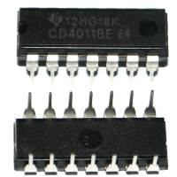
Description:
- Part NO.: CD4011BE
- Quantity: 10pcs
10PCS CD4017 4017 DIP-16 DECADE COUNTER DIVIDER NEW GOOD QUALITY
(http://www.ebay.co.uk/itm/141733442129) - £1.02
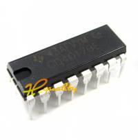
1pc 5050 12-Bit RGB LED Ring WS2812 Round Decoration Bulb Perfect For Arduino DE
(http://www.ebay.co.uk/itm/281775751589) - £2.15
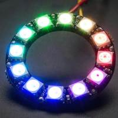
Features:
- 100% Brand new and high quality!
- Intelligent reverse polarity protection, power supply reverse polarity will not damage the IC.
- IC control circuit and a power LED spot light utility.
- Control circuit chip with RGB components in a package in 5050, to form a complete external control pixels.
- built-in signal shaping circuit, any one pixel after receiving the signal through the waveform shaping and then output to ensure line waveform distortion will not accumulate.
- Built-in power-on reset and brown-out reset circuit.
- trichromatic color of each pixel can realize 256 highlighted, complete 16777216 colors of all true color display, the scanning frequency is not less than 400Hz / s.
- serial cascade interface, through a signal line to complete the receiving and decoding of data.
- transfer transmission distance between any two points in less than 5 meters without any additional circuitry.
- When the refresh rate of 30 frames / sec, cascading number of not less than 1024 points.
- data transmission speeds of up to 800Kbps.
- The color of the light highly consistent, cost-effective.
Specifications:
- Outer diameter: 48mm
- Inner diameter: 35mm
- Net Weight: 6g
Package includes:
- 1 x RGB LED Ring 12 Bit WS2812 5050 RGB LED with Integrated Driver
That's all Folks!